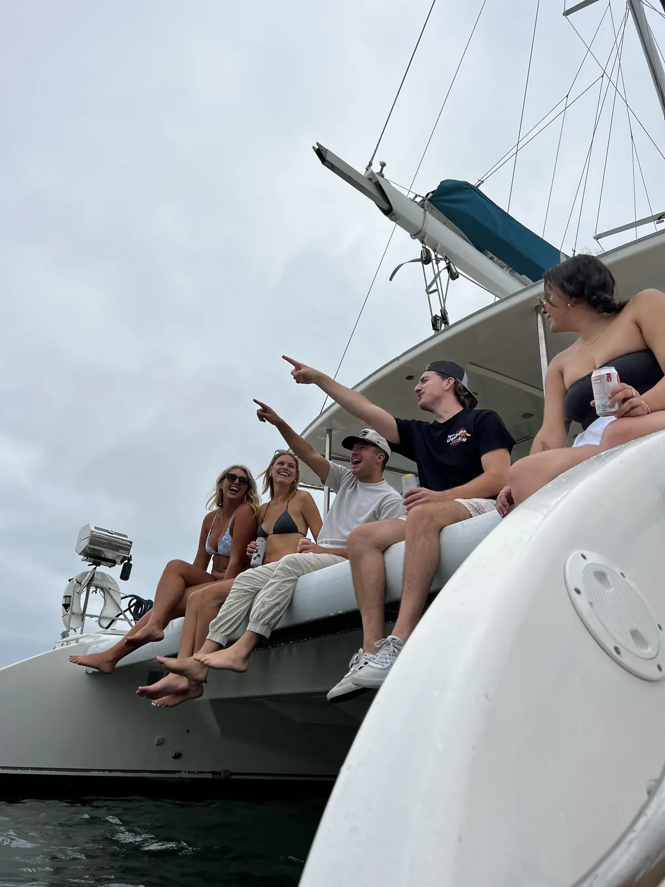
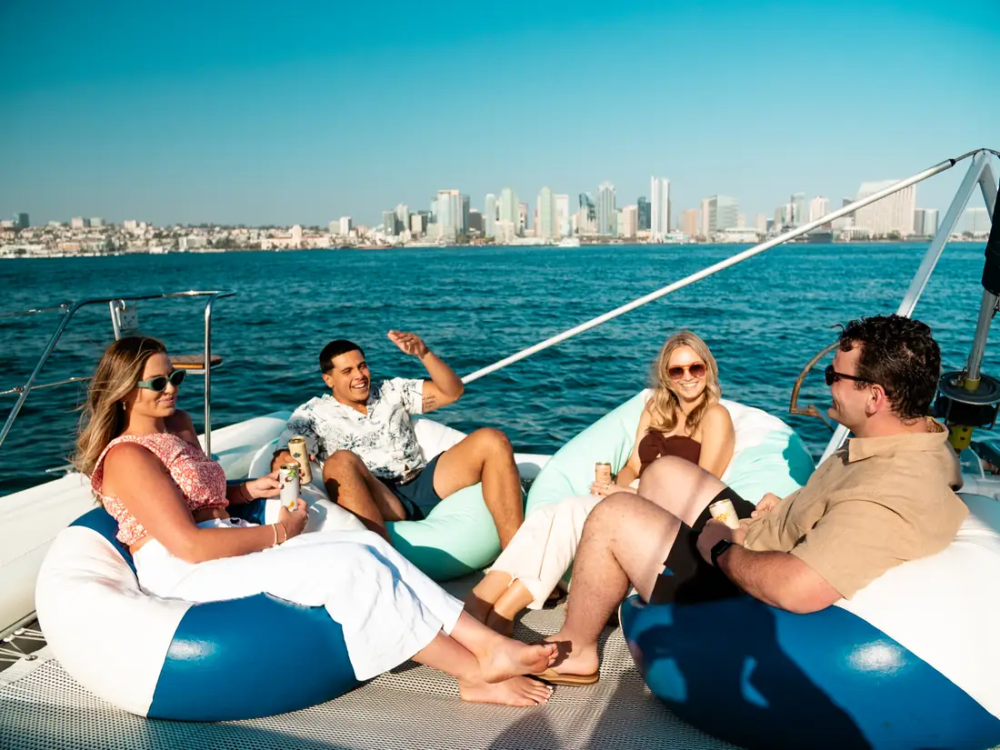
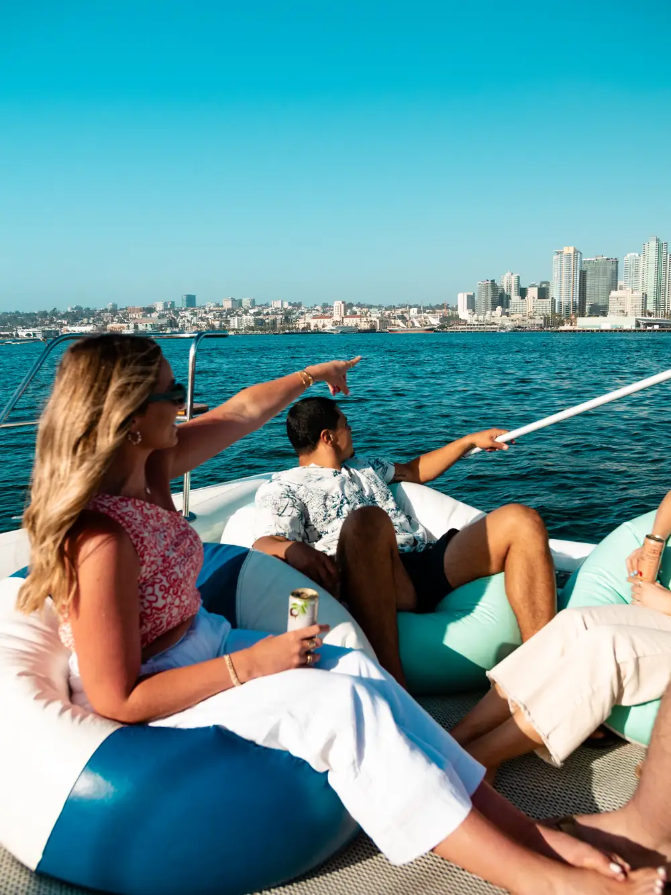
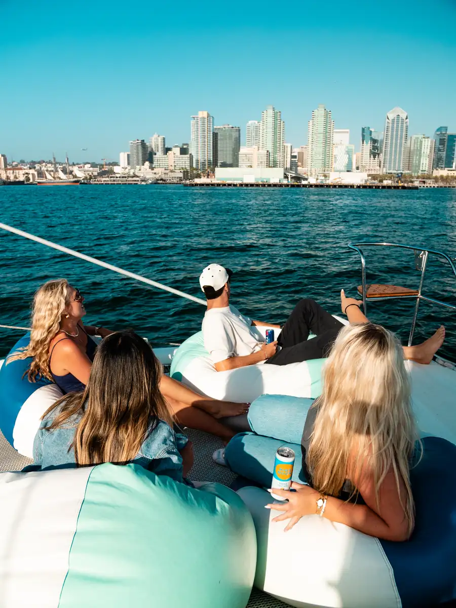
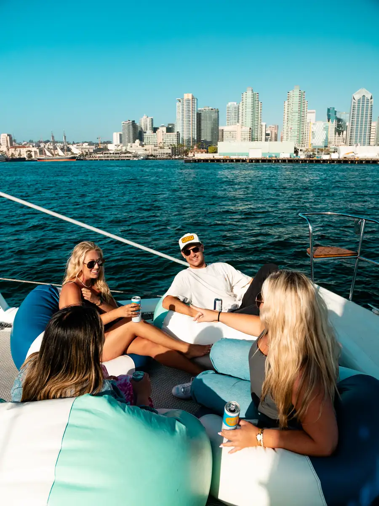
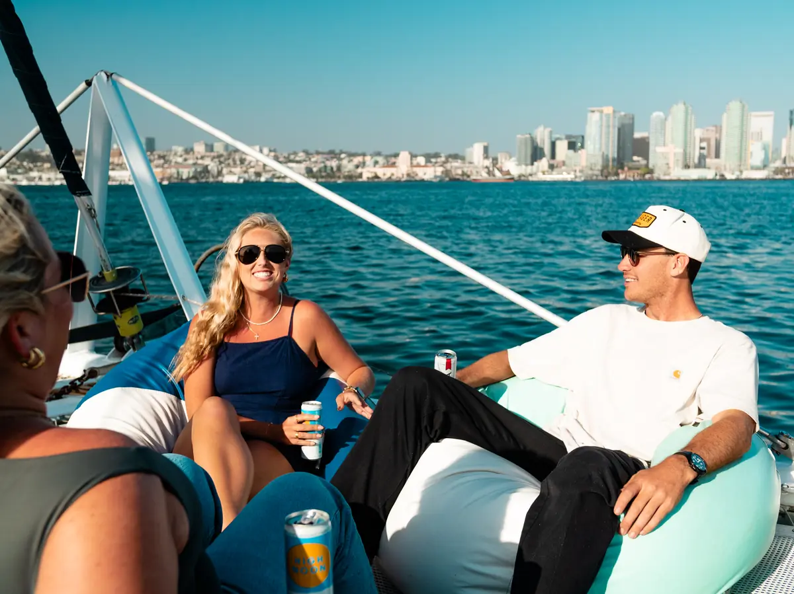

San Diego Bay · Private Yacht Rental
Luxury Yacht Rental in San Diego
A 47-foot sailing catamaran. Twelve guests. Captain and crew included. BYOB and food welcome. Departing from Shelter Island — the best stretch of San Diego Bay.
A 47-foot sailing catamaran. Twelve guests. Captain and crew included. BYOB and food welcome. Departing from Shelter Island — the best stretch of San Diego Bay.
You and up to 11 guests will embark on an adventure through one of the most scenic urban bays in the country. Malarky is a Voyage 47 catamaran — built in Cape Town, South Africa — with a low-profile hull, ample sail power, and modern interior that makes for a genuinely comfortable day on the water.
Sit back and enjoy what San Diego Bay offers from the water: dolphins, gray whales, seals, the Coronado Bridge silhouette at sunset, and the USS Midway from a perspective most visitors never see. Your captain handles the sailing; you handle the good time.

Malarky is a 47-foot performance catamaran from Voyage Yachts in Cape Town — a builder known for vessels that handle ocean crossings as easily as bay day-trips. On San Diego Bay, that translates to a remarkably stable, smooth, and spacious experience even with a full party of twelve.






Malarky’s unique bow offers plenty of seating and gorgeous views, keeping you close to the water. Watch the bay slip underneath while cruising. Dolphins tend to pace the bow — it’s the best seat on the boat.
Shaded table seating for eight, great views off the stern, and easy access to the swim platform. Perfect for meals, toasting a special occasion, or just watching San Diego slide past at a civilized pace.
A modern interior with comfortable seating, natural light, coffee tables, and a mini fridge. Retreat from the sun, keep drinks cold, or watch the skyline pass from inside — San Diego looks good through those windows too.
We celebrated my 60th birthday with a sunset sail on Malarky and it was truly magical. The boat was pristine and beautiful, and the crew were so accommodating. We sailed south to Sunset Cliffs and then north toward La Jolla — the whole bay glowing at dusk.
OMG we did this for my sister’s bachelorette party and it was beyond expectations. The yacht was ready and stocked with ice and blankets when we arrived. Captain Andrew & Becca were so helpful and just made our experience so chill.
It is all my family talked about the next day and said they couldn’t wait to come back and do it again. If you are looking for a great few hours out on the water with your family or friends, I highly recommend Malarky.
We chartered a 3-hour ride for my daughter’s 17th birthday and had a fantastic time. Captain and crew were both fantastic. Definitely exceeded my expectations. 10 out of 10 would do this again.
A captain to handle the wheel. You and up to eleven of your favorite people to handle the rest. San Diego Bay is waiting.
Check Availability →